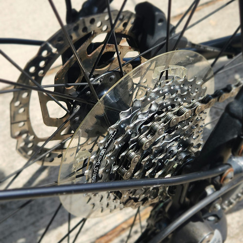
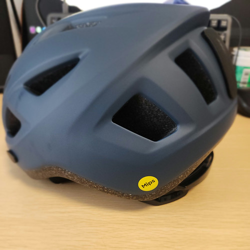
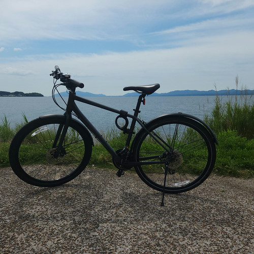
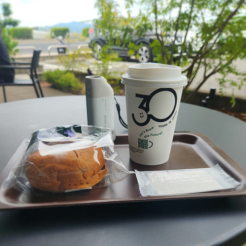

自転車がオーバーホールから返ってきた

先月オーバーホールに出した自転車だが，昨日無事に作業が終わったと連絡があった。 最初の見積もりでは1ヶ月以上かかると言われてたが，半月前倒しにしてもらったようだ。 ありがたや。
午前中は用事があったので，午後から引き取りに行った。 ドライブトレインも綺麗にしてもらったよ。

ブレーキディスクに錆がきてるのはご愛嬌。 ブレーキパッドが当たらないところだから無問題。
明細を見ると後側のスポークが1本交換されていた。 私も気づいてたので，これも問題ない。
問題はヘルメットだった。
もともとヘルメットを見てもらう予定はなく，持って帰るのが面倒だったので預けただけだったのだが，返してもらうときに「メット割れてますよ」と言われてしまった。 よく見たらホンマにヒビが入ってた。 こえー！！
というわけで，ヘルメットを買い替えることにした。

いや，メット被ってなかったら骨折どころじゃなかったよ。 マジで自転車に乗るときはヘルメットを被ろうね。 買うときは「Mips」マークが付いているものを選ぼう。
そうそう。 今回は「おまっちぇ お買物券」を満額使わせてもらった。

どうせ泡銭だしパーッと使わないと（笑）
身体測定を兼ねて玉造温泉方面まで行ってみた。

このくらいの距離なら大丈夫そうだな。 しばらくはこれを目安に自転車リハビリをしよう。
ここまで（キツい坂道は避けて）9kmほどの道のりだったが，お腹が減ってしまった。 コメダのかき氷が食べたかったが，そこまでお腹が保たずに玉湯のスタバへ。

腹が減るたびに喫茶店に入るわけにもいかないので，またコンビニの羊羹を常備しておきますかね。